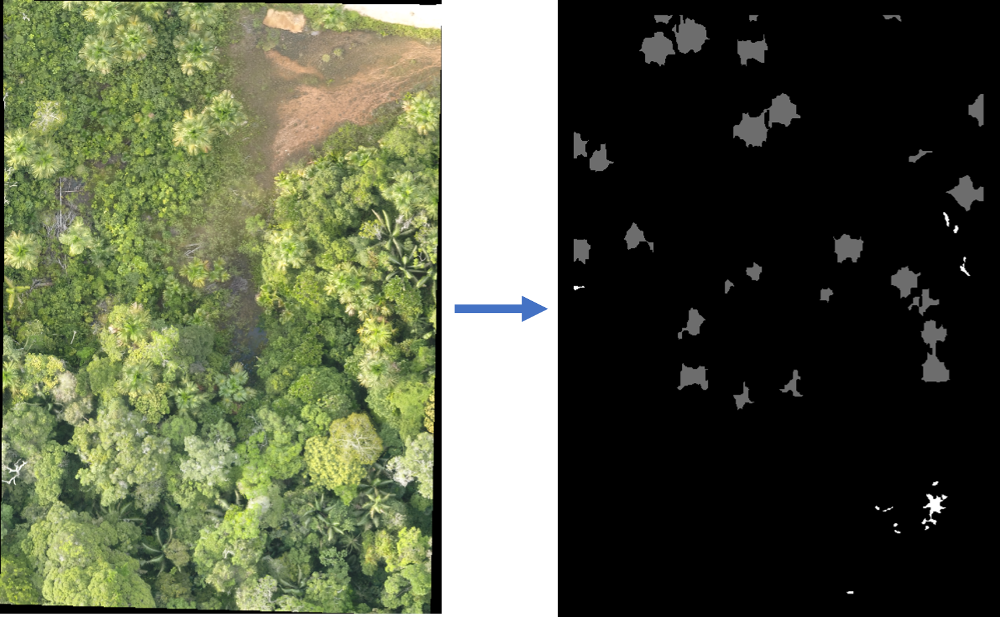

PalmsCNN: Palm Tree Detection
Version: 1.3.0 | Institution: Instituto de Investigaciones de la Amazonía Peruana (IIAP)
Introduction
PalmsCNN is a QGIS plugin designed to automatically detect three Amazonian palm species —aguaje (Mauritia flexuosa), huasaí (Euterpe precatoria), and ungurahui (Oenocarpus bataua)— in high-resolution RGB drone imagery.
The system uses a convolutional neural network (CNN) model to identify and map palm trees across Amazonian landscapes.

Installation and Dependencies
- When you run the plugin for the first time, it will automatically create a virtual environment (
venv) containing all required libraries: numpy, scikit-image, and onnxruntime.
- This process requires Internet access only during the first setup.
- Once the environment is ready, it will be stored locally and reused in future sessions.
Usage
- In QGIS, open Processing → PalmsCNN: Palm Tree Detection.
- Select an RGB image (drone or high-resolution satellite imagery).
- Choose the target species or select “All”.
- Run the algorithm and wait for the detection results.
- The output layer will display the georeferenced locations of detected palms.

Troubleshooting
- Virtual environment not created: Check Internet connection and write permissions in the user folder.
- SSL error: Ensure your QGIS Python interpreter has SSL support (default on Windows and Linux builds).
- Plugin not visible: Make sure you are using QGIS version 3.34 or later.
Credits
Developed by the Artificial Intelligence Laboratory - BOSQUES – IIAP, Peru.
Authors: Susan Palacios, Rodolfo Cardenas, Stephano Torres, Ximena Tagle
Contact: rcardenasv@iiap.gob.pe